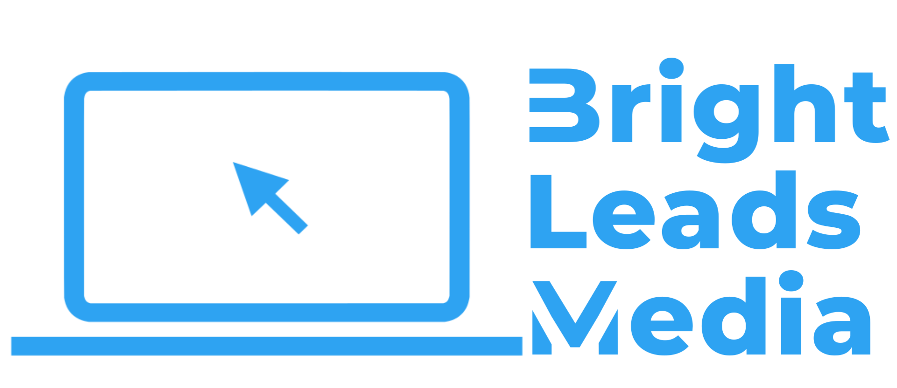
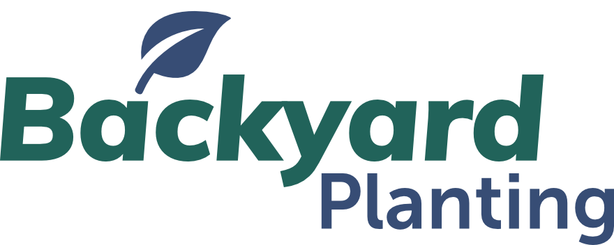
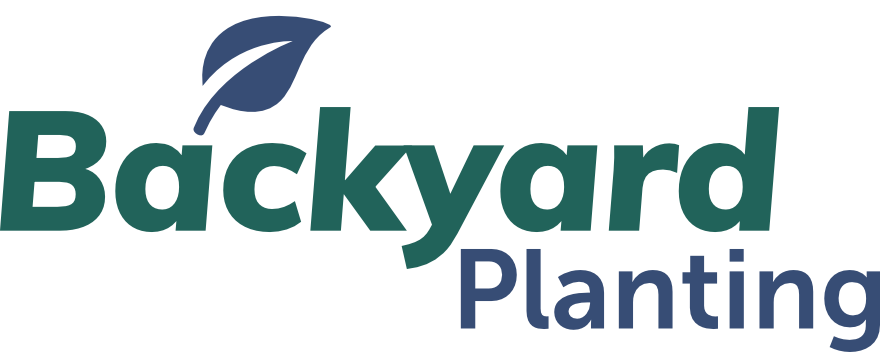
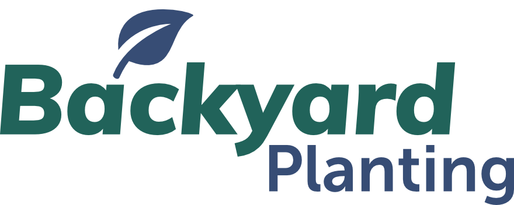
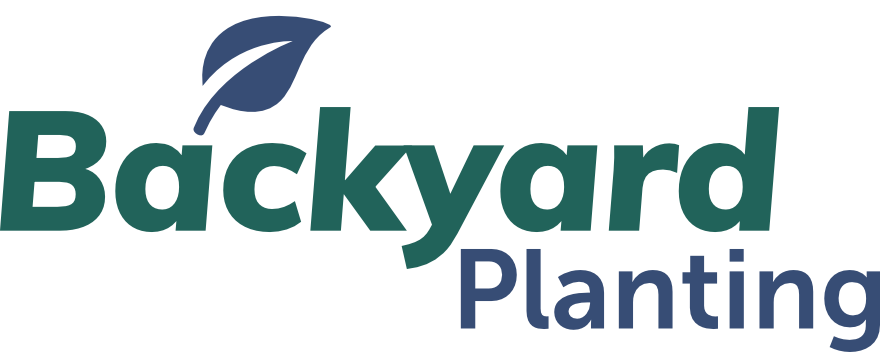

My clients include

 


Casablanca based freelancer, I create bespoke websites to help people and companies go further online.
Wordpress CMS is a user-friendly administrative area allowing you to easily edit your website's content.
Learn moreExisting plugins don't deliver the unique functionality that your website requires? Let me step in, and I'll create it for you.
Learn moreCreating good content doesn’t matter anymore if nobody can find or see it
Learn more

Many WordPress themes are available on the web at very competitive prices. However, these themes are accessible to everyone and do not guarantee a personalized experience for your visitor. Your company/brand has a history, experience, and values, and these values must be present on your WordPress website to engage your visitor.
So it makes sense to create a personalized identity and provide your users with a unique experience. This step will allow you to display a site close to your values and your image that respects UX good practices and modern visual identity.
Let's work together on your next website and you will get a unique website, respecting the best practices of modern WordPress development, the recommendations of search engines as well as the guarantee of a secure digital image.
Some requests sometimes are too specific to be fulfilled by just installing plugins available on the internet or on WordPress Plugin Directory. Therefore I'm here to help you building a plugin that meets your needs 100%.
If you need to connect one of your tools to WordPress, or if you need to benefit from a new feature on your WordPress website, I am available to develop a custom plugin, easy to configure and meet the standards of the platform. The plugin will be powerful and developed according to modern development conventions.
Technical SEO may be a vital step within the whole SEO process. If there are problems with your technical SEO then it's likely that your SEO efforts won't generate the expected results.
It is thus crucial that you understand what's technical SEO and the way to get it right.
The good news is that after a technical SEO audit of your website and fix any potential problems. You don't have to deal with them again.
Technical SEO covers a wide range of techniques and strategies; all unique to each and every website. There are common areas of optimisation however each website varies. Some of the techniques any SEO consultant will look at are as followed:
And many more...
As a business owner I wouldn’t expect any of this lingo to be familiar to you. Nor does that even matter. It shouldn’t be your problem.